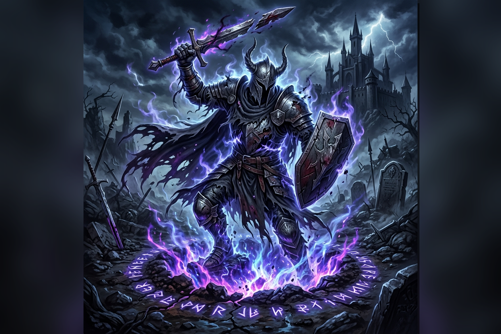

Phantom Knights' Revival
Normal Trap

[ Trap / Normal ]
If you control no monsters: Banish up to 3 "The Phantom Knights" Spell/Trap Cards from your GY; Special Summon an equal number of "The Phantom Knights" monsters from your GY and/or banishment, and if you do, you can increase their Levels by 1, but their effects are negated, their ATK/DEF become 0, also banish them during the End Phase. You cannot Special Summon monsters from the Extra Deck the turn you activate this card, except "The Phantom Knights" and "Xyz Dragon" monsters.
You can only activate 1 "Phantom Knights' Revival" per turn.